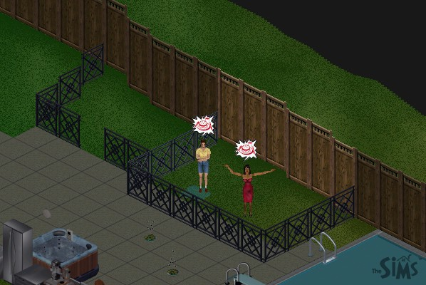

|
The Death of The Sims
An Experiment on the Physics of a Game
by Jason L. Snowden
Preamble
I first bought The Sims because it sounded like a neat concept. A game in which you control people, going about their daily lives, with their families, their jobs, and their friends. I also was interested to see how the physics of the game worked. It sounded like an interesting attempt at AI. So, I started playing, creating a family based around my own, named after my own, a husband and wife, with a young son. But that soon became kind of boring. I mean, I have that in real life. It's not that interesting to play in a game.
So I decided to get more adventurous. I created a gigolo. He started a career in politics, and started making some lady friends. He was being fairly successful, and was getting really close to one of the women. Finally, he proposed to her. She turned him down. Now, at this point, I was getting bored of the game again, and had read on the web that someone found out that the Sims could die. So I turned the opportunity of the rejection to make my character a serial killer. Chronicled below is what developed.
|
Here are Syd Darkmage's two lady friends. Since one of them was responsible for him cracking, they were the first into the cage. They were given all the luxuries they should need (toilet and food), but apparently if they're trapped, they won't use it. |
 |
They're starting to realize they are trapped, and getting annoyed. Syd's removed the luxuries, since they were just in the way. One has peed her pants, and they're both rather hungry. |
|
With his first two victims' graves in plain sight, Syd gets his tactics down pat. He uses a basketball hoop to lure them into the cage, then closes the gate off between the two inner chambers. He's becoming very efficient. |
|
Catching victims is hard work! Syd is certainly in need of a nap. At this point, he hasn't quit his job yet, and it takes its toll on his sleep. |
|
Syd was spending too much time mourning over the graves (a built in reflex in the game), so a small gravesite was started, fenced in to keep the mourning Syd away. |
Next Page
darkmage@gmail.com
All images and content are ©2000 Jason L. Snowden or
copyrighted by their respective companies
|